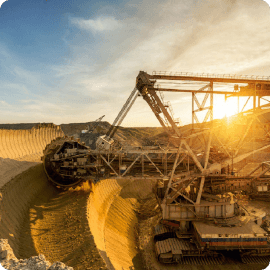

<div class="form-wrapper form-wrapper2">
  <div class="popup-block-active">
    <div class="close-icon"></div>
    <div class="inner">
      <div class="left">
        <div class="image-slick slick-slider">
          <div></div>
          <div></div>
          <div></div>
        </div>
        <div class="image-gallery slick-slider">
          <div></div>
          <div></div>
          <div></div>
        </div>
        <div class="see-more"><a href="#">Смотреть все 10 фото</a></div>
        <div class="go-to"><a href="#">Перейти на сайт</a></div>
      </div>
      <div class="right">
        <div class="title-bl">Разрез Назаровский</div>
        <div class="address">662200, г. Назарово, ул. Березовая роща, д. 1.</div>
        <div class="block">
          <div class="item">
            <div class="title">Добыча</div>
            <div class="text">35,3
              <div class="desc">  млн. тонн</div>
            </div>
          </div>
          <div class="item">
            <div class="title">ПЕРСОНАЛ</div>
            <div class="text">1341
              <div class="desc">человек</div>
            </div>
          </div>
        </div>
        <div class="body">
          <p>Разрез «Назаровский» разрабатывает Назаровское месторождение бурых углей. Сдан в эксплуатацию в 1951 году с производственной мощностью 2,5 млн тонн угля в год. Сегодня объем добычи на предприятии составляет более 3 млн тонн. Во все годы разрез был одним из передовых предприятий отрасли и полигоном для испытания новейших образцов горнодобывающей техники, за что отмечен многочисленными наг радами.</p>
          <p>Во все годы разрез был одним из передовых предприятий отрасли и полигоном для испытания новейших образцов горнодобывающей техники, за что отмечен многочисленными наградами. За выдающиеся достижения Назаровский разрез награжден орденом Трудового Красного Знамени.</p>
        </div>
      </div>
    </div>
  </div>
</div>